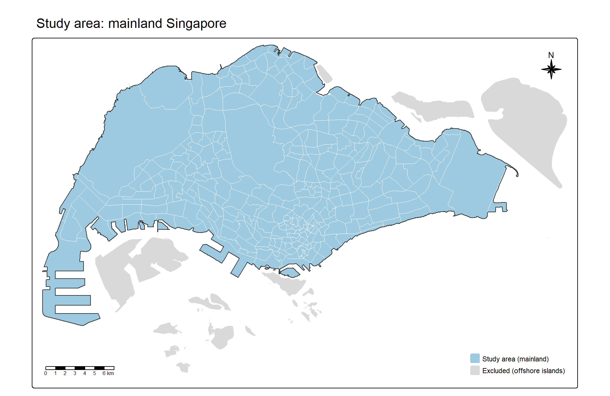

pacman::p_load(sf, tidyverse, readxl, httr2, jsonlite, MCI,
tmap, knitr, kableExtra)03: Geospatial Analytics for Urban Sustainability
1. Introduction and Study Context
Urban Rail Transit (URT) is central to sustainable urban development. By moving large numbers of people quickly and reliably, it supports transit-oriented development, reduces road congestion and connects residents to jobs, services and education. In Singapore, the Mass Rapid Transit (MRT) system has been the backbone of public transport since 1987. As of 2024, the network had 143 stations across six lines and about 242.6 km of track, carrying an average of 3.41 million passengers a day.
Expanding the network carries a planning risk. Stations are often built ahead of demand to avoid future disruption and cost, but a station that opens before its catchment has developed incurs operating costs with few riders. Hume station’s structural shell was completed in 2015, but the station opened only on 28 February 2025, a decade after Downtown Line Stage 2 began operating. Buangkok and Woodleigh stations remained closed when the North East Line opened in 2003 because the projected passenger volumes did not justify their operating costs. Such decisions depend on estimating a station’s catchment and predicting its ridership before it opens.
Two new lines will add 36 stations by 2030: the Jurong Region Line (JRL, 24 stations) and Phase 1 of the Cross Island Line (CRL, 12 stations). New stations also compete with existing ones. Residents who live between an existing and a new station may switch, so the new lines can reduce ridership at existing stations as well as add their own.
Probabilistic spatial interaction models address this question directly. The Huff model estimates the probability that a resident at a given location uses each station, based on the station’s attractiveness and the distance to it, relative to all competing stations (Huff, 1964). Zhu et al. (2021) applied an improved Huff model to estimate URT station catchments in Xi’an, measuring station attractiveness through walkability, public transport accessibility and service quality. However, they adopted the distance-decay and attractiveness parameters from the literature and from expert ratings rather than calibrating them, and noted this as their main limitation. This exercise calibrates the model parameters against observed station ridership in Singapore, using the Multiplicative Competitive Interaction (MCI) model, the calibratable form of the Huff model (Nakanishi & Cooper, 1974).
2. Research Objectives and Questions
2.1 Research Objectives
This exercise develops an analytical framework for station-level ridership prediction to:
- Calibrate a probabilistic spatial interaction model for station-level ridership estimation.
- Predict the potential ridership of the proposed JRL and CRL Phase 1 stations.
- Evaluate the potential impact of the new stations on the ridership and market areas of existing stations.
2.2 Research Questions
- RQ1: How well does a calibrated probabilistic spatial interaction model explain the observed weekday morning-peak ridership of existing MRT and LRT stations, and which station attributes matter beyond distance?
- RQ2: What ridership can be expected at the 36 proposed JRL and CRL Phase 1 stations, and which stations are at risk of low ridership?
- RQ3: How will the new stations redistribute the market areas and ridership of existing stations?
2.3 Model Components
| Component | Definition in this exercise | Data |
|---|---|---|
| Origins | Hexagonal grid cells covering mainland Singapore | Created in this exercise |
| Market potential | HDB residents aged 15–64 in each hexagon, June 2026 | SingStat population by subzone, HDB Property Information, HDB Existing Building |
| Destinations | Existing MRT/LRT stations, and existing plus proposed stations | LTA Train Station, URA Master Plan 2025 Rail Station |
| Observed ridership | Average weekday tap-ins between 7am and 9am, July–September 2026 | LTA Passenger Volume by Origin Destination Train Stations |
| Attractiveness | Candidate station attributes, such as nearby points of interest, bus interchanges and bus stops, and the number of lines served | OpenStreetMap, LTA Bus Stop |
| Distance | Straight-line distance from each hexagon to each station, in metres | Computed in this exercise |
Market potential is defined as HDB residents aged 15 to 64, covering the secondary-school, tertiary and working-age groups that make up most weekday morning-peak MRT trips. Children under 15 are excluded because most travel to nearby primary schools on foot or by school bus. Residents aged 65 and over are excluded because their trips are less concentrated in the morning peak.
3. Getting Started
3.1 Installing R Packages
| Package | Purpose in this exercise |
|---|---|
| sf | Import, reproject, validate and process geospatial data |
| tidyverse | Import CSV files, data cleaning, joins and aggregation |
| readxl | Import the SingStat population workbook (.xlsx) |
| httr2, jsonlite | Download the passenger volume data from the LTA DataMall API (Section 3.4) |
| MCI | Calibrate the MCI model and compute Huff probabilities |
| tmap (version 4) | Thematic maps |
| knitr, kableExtra | Tables |
p_load() of pacman installs any package that is missing and then loads all of them. The map code in this report uses tmap version 4 syntax (for example, fill = instead of col =), so tmap 4.0 or later is required.
3.2 Project Structure
All file paths in this report are relative to the Quarto project folder, so the code runs on any computer once the data are placed in the same structure:
Take-Home_Ex03/
├── Take-Home_Ex03.qmd
├── data/
│ ├── geospatial/ # boundary, land use, buildings, stations, bus stops, OSM POIs
│ └── aspatial/ # passenger volume CSVs, station codes, HDB properties, population3.3 Datasets
| Dataset | Source | Format | Version / period | Use in this exercise |
|---|---|---|---|---|
| Master Plan 2019 Subzone Boundary (No Sea) | data.gov.sg (URA) | GeoJSON | MP2019 | Study boundary; link to population by subzone |
| Master Plan 2019 Land Use | data.gov.sg (URA) | GeoJSON, 113,213 polygons | MP2019 | Locating residents in private housing |
| HDB Property Information | data.gov.sg (HDB) | GeoJSON, 13,436 footprints | Updated to 2026 | Locating HDB blocks |
| Master Plan 2025 Rail Station | data.gov.sg (URA) | GeoJSON, 272 polygons | MP2025 | Locations of the proposed JRL and CRL stations |
| Train Station | LTA DataMall | Shapefile, 234 polygons | September 2026 | Locations of existing stations |
| Bus Stop Location | LTA DataMall | Shapefile, 5,205 points | September 2026 | Station attractiveness (bus access) |
| OpenStreetMap points of interest | Geofabrik, Malaysia, Singapore and Brunei extract | Shapefiles: points and polygons | Downloaded in October 2026 | Station attractiveness (nearby activities) |
| Passenger Volume by Origin Destination Train Stations | LTA DataMall API | CSV, one file per month | July-September 2026 | Observed station ridership |
| Train Station Codes and Chinese Names | data.gov.sg | CSV, 184 codes | December 2015 | Linking passenger volume codes to station names |
| HDB Property Information | data.gov.sg (HDB) | CSV, 13,392 blocks | 2025 | Residential flag and dwelling units per block |
| Singapore Residents by Planning Area/Subzone, Age Group, Sex and Type of Dwelling | SingStat | Excel workbook | June 2026 | Market potential (residents aged 15–64) |
3.4 Downloading the Passenger Volume Data
Unlike the other datasets, the passenger volume data cannot be downloaded directly from a web page. It is served through the LTA DataMall API, which requires an Account Key. To reproduce this step, request an Account Key at the LTA DataMall API request page. The key is sent by email.
DataMall only provides the three most recent months. The July to September 2026 files will therefore no longer be available from the API after December 2026.
3.5 Importing Geospatial Data
The eight geospatial datasets are imported with st_read(). GeoJSON files are read by file path. Shapefiles are read by folder (dsn) and layer name, because a shapefile consists of several files (.shp, .shx, .dbf, .prj) that must sit together in the same folder.
mpsz_raw <- st_read("data/geospatial/MasterPlan2019SubzoneBoundaryNoSeaGEOJSON.geojson", quiet = TRUE)
landuse_raw <- st_read("data/geospatial/MasterPlan2019LandUselayer.geojson", quiet = TRUE)
hdb_bldg_raw <- st_read("data/geospatial/HDBExistingBuilding.geojson", quiet = TRUE)
mp25_stn_raw <- st_read("data/geospatial/MasterPlan2025RailStationLayer.geojson", quiet = TRUE)
rts_raw <- st_read(dsn = "data/geospatial/RapidTransitSystemStation", layer = "RapidTransitSystemStation", quiet = TRUE)
busstop_raw <- st_read(dsn = "data/geospatial/BusStopLocation_Sep2026", layer = "BusStop", quiet = TRUE)
poi_pt_raw <- st_read(dsn = "data/geospatial/gis_osm_pois", layer = "gis_osm_pois_free_1", quiet = TRUE)
poi_poly_raw <- st_read(dsn = "data/geospatial/gis_osm_pois", layer = "gis_osm_pois_a_free_1", quiet = TRUE)To check all eight layers at once, the code chunk below summarises each layer’s number of features, geometry type, whether it carries a Z (height) dimension, its coordinate reference system (CRS) and its number of invalid geometries.
NoteAI Use Disclosure
AI tools were used to draft the R code that summarises the eight layers into a single table using imap() and list_rbind(). The output was reviewed and run by the author to verify correctness against the study data.
geo_layers <- list(mpsz_raw = mpsz_raw, landuse_raw = landuse_raw,
hdb_bldg_raw = hdb_bldg_raw, mp25_stn_raw = mp25_stn_raw,
rts_raw = rts_raw, busstop_raw = busstop_raw,
poi_pt_raw = poi_pt_raw, poi_poly_raw = poi_poly_raw)
imap(geo_layers, \(x, name) tibble(
layer = name,
features = nrow(x),
geometry = paste(unique(as.character(st_geometry_type(x))), collapse = ", "),
has_z = !is.null(st_z_range(x)),
crs = st_crs(x)$Name,
epsg = st_crs(x)$epsg,
invalid = sum(!st_is_valid(x), na.rm = TRUE)
)) %>%
list_rbind() %>%
kable()| layer | features | geometry | has_z | crs | epsg | invalid |
|---|---|---|---|---|---|---|
| mpsz_raw | 332 | MULTIPOLYGON | FALSE | WGS 84 | 4326 | 6 |
| landuse_raw | 113213 | MULTIPOLYGON | FALSE | WGS 84 | 4326 | 3 |
| hdb_bldg_raw | 13436 | MULTIPOLYGON | FALSE | WGS 84 | 4326 | 4 |
| mp25_stn_raw | 272 | MULTIPOLYGON | FALSE | WGS 84 | 4326 | 0 |
| rts_raw | 234 | MULTIPOLYGON | FALSE | SVY21 | NA | 0 |
| busstop_raw | 5205 | POINT | FALSE | SVY21 | NA | 0 |
| poi_pt_raw | 108841 | POINT | FALSE | WGS 84 | 4326 | 0 |
| poi_poly_raw | 64468 | MULTIPOLYGON | FALSE | WGS 84 | 4326 | 0 |
The summary shows four issues that are addressed in Section 4:
- Mixed coordinate systems. The GeoJSON files and the OpenStreetMap files are in WGS 84 (longitude and latitude, in degrees), while the two LTA shapefiles are in SVY21 without an EPSG code. Distances must be measured in metres, so all layers are projected to SVY21 / Singapore TM (EPSG:3414).
- Invalid geometries. A small number of polygons are invalid, for example with self-intersecting outlines, in the land use and HDB building layers and possibly the subzone boundary. These can cause spatial joins and overlays to fail or return wrong results.
- Possible Z dimension in the subzone boundary. Some versions of the boundary file carry a height (Z) value for each vertex. It holds no information for this analysis and is removed with st_zm(), which has no effect if there is no Z dimension.
- OpenStreetMap coverage. The extract covers Malaysia, Singapore and Brunei, so 108,841 points and 64,468 polygons are imported, most of them outside Singapore. They are clipped to the study area when station attractiveness is prepared.
3.6 Importing Aspatial Data
3.6.1 Passenger volume
The three monthly passenger volume files are read together. list.files() finds every file that matches the naming pattern origin_destination_train_YYYYMM.csv, and read_csv() reads and stacks them in one step. The column types are set explicitly so that every month is read the same way, with station codes such as EW24/NS1 kept as text.
od_files <- list.files("data/aspatial",
pattern = "^origin_destination_train_\\d{6}\\.csv$",
full.names = TRUE)
od_files[1] "data/aspatial/origin_destination_train_202607.csv"
[2] "data/aspatial/origin_destination_train_202608.csv"
[3] "data/aspatial/origin_destination_train_202609.csv"od_raw <- read_csv(od_files,
col_types = cols(YEAR_MONTH = col_character(),
DAY_TYPE = col_character(),
TIME_PER_HOUR = col_integer(),
PT_TYPE = col_character(),
ORIGIN_PT_CODE = col_character(),
DESTINATION_PT_CODE = col_character(),
TOTAL_TRIPS = col_double()))
glimpse(od_raw)Rows: 2,702,429
Columns: 7
$ YEAR_MONTH <chr> "2026-07", "2026-07", "2026-07", "2026-07", "2026-…
$ DAY_TYPE <chr> "WEEKENDS/HOLIDAY", "WEEKENDS/HOLIDAY", "WEEKDAY",…
$ TIME_PER_HOUR <int> 8, 14, 20, 19, 17, 11, 7, 9, 16, 5, 15, 16, 20, 17…
$ PT_TYPE <chr> "TRAIN", "TRAIN", "TRAIN", "TRAIN", "TRAIN", "TRAI…
$ ORIGIN_PT_CODE <chr> "EW33", "CE1/DT16", "NE4/DT19", "EW30", "DT30", "D…
$ DESTINATION_PT_CODE <chr> "TE18", "NS23", "SW4", "NS12", "SW4", "NE18", "DT3…
$ TOTAL_TRIPS <dbl> 3, 141, 159, 4, 5, 29, 426, 25, 7, 12, 107, 124, 4…od_raw %>% count(YEAR_MONTH, DAY_TYPE)# A tibble: 6 × 3
YEAR_MONTH DAY_TYPE n
<chr> <chr> <int>
1 2026-07 WEEKDAY 487167
2 2026-07 WEEKENDS/HOLIDAY 420799
3 2026-08 WEEKDAY 471262
4 2026-08 WEEKENDS/HOLIDAY 435723
5 2026-09 WEEKDAY 475395
6 2026-09 WEEKENDS/HOLIDAY 412083The combined data have 2,702,429 rows, each recording the number of trips between one pair of stations in one hour, for weekdays or for weekends and holidays, in each month. TOTAL_TRIPS is the total for the whole month, not a daily figure, so months with more weekdays have larger totals. This is accounted for when the observed ridership is computed.
3.6.2 Train station codes
The passenger volume data identify stations by code only. The station code list links each code to its station name and line. Only the English columns are imported, as the Chinese names are not used in this exercise.
stn_code_raw <- read_csv("data/aspatial/TrainStationChineseNames.csv",
col_select = c(stn_code, mrt_station_english, mrt_line_english),
show_col_types = FALSE)
glimpse(stn_code_raw)Rows: 184
Columns: 3
$ stn_code <chr> "NS1", "NS2", "NS3", "NS4", "NS5", "NS7", "NS8", "…
$ mrt_station_english <chr> "Jurong East", "Bukit Batok", "Bukit Gombak", "Cho…
$ mrt_line_english <chr> "North South Line", "North South Line", "North Sou…3.6.3 HDB Property Information
blk_no is read as text because block numbers can carry a letter suffix, such as 1A. Reading it as a number would turn these into missing values.
hdb_prop_raw <- read_csv("data/aspatial/HDBPropertyInformation.csv",
col_types = cols(blk_no = col_character(), .default = col_guess()))
glimpse(hdb_prop_raw)Rows: 13,392
Columns: 24
$ blk_no <chr> "1", "1", "1", "1", "1", "1", "1", "1", "1", "1"…
$ street <chr> "BEACH RD", "BEDOK STH AVE 1", "CANTONMENT RD", …
$ max_floor_lvl <dbl> 16, 14, 2, 15, 4, 25, 12, 14, 12, 2, 15, 15, 13,…
$ year_completed <dbl> 1970, 1975, 2010, 1982, 1975, 1982, 1975, 1977, …
$ residential <chr> "Y", "Y", "N", "Y", "Y", "Y", "Y", "Y", "Y", "N"…
$ commercial <chr> "Y", "N", "Y", "N", "Y", "N", "N", "N", "Y", "Y"…
$ market_hawker <chr> "N", "N", "N", "N", "N", "N", "N", "N", "N", "N"…
$ miscellaneous <chr> "N", "Y", "N", "N", "N", "N", "Y", "Y", "N", "N"…
$ multistorey_carpark <chr> "N", "N", "N", "N", "N", "N", "N", "N", "N", "N"…
$ precinct_pavilion <chr> "N", "N", "N", "N", "N", "N", "N", "N", "N", "N"…
$ bldg_contract_town <chr> "KWN", "BD", "CT", "BD", "PRC", "BM", "QT", "GL"…
$ total_dwelling_units <dbl> 142, 206, 0, 102, 55, 96, 125, 247, 95, 0, 220, …
$ `1room_sold` <dbl> 0, 0, 0, 0, 0, 0, 0, 0, 0, 0, 0, 0, 0, 0, 0, 0, …
$ `2room_sold` <dbl> 1, 0, 0, 0, 0, 0, 0, 0, 0, 0, 0, 0, 0, 0, 0, 0, …
$ `3room_sold` <dbl> 138, 204, 0, 0, 54, 0, 118, 0, 62, 0, 216, 213, …
$ `4room_sold` <dbl> 1, 0, 0, 10, 0, 0, 0, 0, 0, 0, 0, 0, 0, 0, 0, 0,…
$ `5room_sold` <dbl> 2, 2, 0, 92, 1, 96, 7, 0, 33, 0, 4, 5, 0, 4, 0, …
$ exec_sold <dbl> 0, 0, 0, 0, 0, 0, 0, 0, 0, 0, 0, 0, 0, 0, 0, 0, …
$ multigen_sold <dbl> 0, 0, 0, 0, 0, 0, 0, 0, 0, 0, 0, 0, 0, 0, 0, 0, …
$ studio_apartment_sold <dbl> 0, 0, 0, 0, 0, 0, 0, 0, 0, 0, 0, 0, 0, 0, 0, 0, …
$ `1room_rental` <dbl> 0, 0, 0, 0, 0, 0, 0, 0, 0, 0, 0, 0, 319, 0, 0, 0…
$ `2room_rental` <dbl> 0, 0, 0, 0, 0, 0, 0, 247, 0, 0, 0, 0, 0, 0, 56, …
$ `3room_rental` <dbl> 0, 0, 0, 0, 0, 0, 0, 0, 0, 0, 0, 1, 0, 0, 14, 1,…
$ other_room_rental <dbl> 0, 0, 0, 0, 0, 0, 0, 0, 0, 0, 0, 0, 0, 0, 14, 0,…3.6.4 Population by planning area and subzone
The SingStat workbook has three sheets: total, male and female population. Only 2026(Total) is needed. The sheet starts with a title row and a blank row, so the first two rows are skipped. SingStat uses - to denote nil or negligible values, so na = "-" reads these as missing values, which keeps the population column numeric.
pop_file <- "data/aspatial/Singapore_Residents_by_Planning_Area_Subzone_Jun 2026.xlsx"
excel_sheets(pop_file)[1] "2026(Total)" "2026(Male)" "2026(Female)"pop_raw <- read_excel(pop_file, sheet = "2026(Total)", skip = 2,
col_types = c("text", "text", "text", "text", "numeric"),
na = "-")
glimpse(pop_raw)Rows: 69,848
Columns: 5
$ `Planning Area` <chr> "Total", "Total", "Total", "Total", "Total", "Total…
$ Subzone <chr> "Total", "Total", "Total", "Total", "Total", "Total…
$ `Age Group` <chr> "Total", "Total", "Total", "Total", "Total", "Total…
$ `Type of Dwelling` <chr> "Total", "Total HDB^", "1- and 2-Room Flats*", "3-R…
$ `2026` <dbl> 4231520, 3195130, 205410, 545530, 1364600, 1079600,…tail(pop_raw, 7)# A tibble: 7 × 5
`Planning Area` Subzone `Age Group` `Type of Dwelling` `2026`
<chr> <chr> <chr> <chr> <dbl>
1 "Note:" <NA> <NA> <NA> NA
2 "Planning areas refer to areas … <NA> <NA> <NA> NA
3 "Data from 2003 onwards exclude… <NA> <NA> <NA> NA
4 "\"-\" denotes Nil or negligibl… <NA> <NA> <NA> NA
5 "Data has been rounded to the n… <NA> <NA> <NA> NA
6 "^ Includes non-privatised Hous… <NA> <NA> <NA> NA
7 "* Includes HDB studio apartmen… <NA> <NA> <NA> NAThe last seven rows are footnotes rather than data. They have no Subzone value and are removed when the population data are prepared. The table also mixes subzone rows with “Total” rows for Singapore, for each planning area, for all ages and for all HDB flat types, so those rows must be filtered out to avoid double-counting.
4. Data Wrangling
4.1 CRS Transformation and Geometry Repair
All layers are projected to SVY21 / Singapore TM (EPSG:3414), Singapore’s national projected coordinate system, which measures distance in metres.
The two LTA shapefiles are already in SVY21 coordinates, but their projection file does not carry the EPSG code. Either st_set_crs() (which relabels the CRS without changing the coordinates) or st_transform() (which converts the coordinates) could be used. Before choosing, the two results were compared:
max(abs(st_coordinates(st_set_crs(rts_raw, 3414))[, 1:2] -
st_coordinates(st_transform(rts_raw, 3414))[, 1:2]))[1] 0The largest difference is 0 m, confirming that the shapefiles’ SVY21 definition is identical to EPSG:3414. st_transform() is therefore used for every layer.
Invalid geometries in the land use and HDB building layers are repaired with st_make_valid(). The repair is done after projecting, because converting coordinates can itself make a small number of polygons invalid: when the repair was done first, two land use polygons were invalid again after projection. The subzone boundary is processed separately in Section 4.2.
landuse <- landuse_raw %>% st_transform(3414) %>% st_make_valid()
hdb_bldg <- hdb_bldg_raw %>% st_transform(3414) %>% st_make_valid()
mp25_stn <- mp25_stn_raw %>% st_transform(3414)
rts <- rts_raw %>% st_transform(3414)
busstop <- busstop_raw %>% st_transform(3414)
poi_pt <- poi_pt_raw %>% st_transform(3414)
poi_poly <- poi_poly_raw %>% st_transform(3414)
c(landuse = sum(!st_is_valid(landuse)), hdb_bldg = sum(!st_is_valid(hdb_bldg))) landuse hdb_bldg
0 0 After projection and repair, both layers have no invalid geometries, so they can be used safely in spatial joins and overlays.
4.2 Preparing the Subzone Boundary
The subzone boundary is used both to define the study area and to link the SingStat population data to locations, so its subzone names must match the population table exactly.
data.gov.sg has distributed this file in two formats. In one, the attributes are ordinary columns (SUBZONE_N, PLN_AREA_N and so on). In the other, all attributes are packed into an HTML table in a single Description column. names() shows which format was downloaded:
names(mpsz_raw) [1] "OBJECTID" "SUBZONE_NO" "SUBZONE_N" "SUBZONE_C" "CA_IND"
[6] "PLN_AREA_N" "PLN_AREA_C" "REGION_N" "REGION_C" "INC_CRC"
[11] "FMEL_UPD_D" "SHAPE.AREA" "SHAPE.LEN" "geometry" If the attributes sit inside Description, the code below extracts each one with a regular expression, which captures the text between <th>FIELD</th><td> and </td>. If they are already columns, this step is skipped.
NoteAI Use Disclosure
AI tools were used to draft the regular expression that extracts subzone attributes from the HTML in the Description column. The output was reviewed and run by the author to verify correctness against the study data.
if (!"SUBZONE_N" %in% names(mpsz_raw)) {
get_attr <- function(html, field) {
str_match(html, paste0("<th>", field, "</th>\\s*<td>(.*?)</td>"))[, 2]
}
for (field in c("SUBZONE_N", "SUBZONE_C", "PLN_AREA_N",
"PLN_AREA_C", "REGION_N", "REGION_C")) {
mpsz_raw[[field]] <- get_attr(mpsz_raw$Description, field)
}
}The boundary is then cleaned:
- select() keeps the subzone, planning area and region names and codes.
- st_zm() drops the Z dimension, if present.
- st_transform() projects to EPSG:3414, and st_make_valid() then repairs invalid polygons.
- Names are converted to upper case and extra spaces removed with str_to_upper() and str_squish(), so that they can be matched reliably with the population table.
mpsz <- mpsz_raw %>%
select(SUBZONE_N, SUBZONE_C, PLN_AREA_N, PLN_AREA_C, REGION_N, REGION_C) %>%
st_zm() %>%
st_transform(3414) %>%
st_make_valid() %>%
mutate(across(c(SUBZONE_N, PLN_AREA_N, REGION_N),
\(x) str_squish(str_to_upper(x))))
tibble(subzones = nrow(mpsz),
duplicate_code = sum(duplicated(mpsz$SUBZONE_C)),
missing_name = sum(is.na(mpsz$SUBZONE_N)),
invalid = sum(!st_is_valid(mpsz)))# A tibble: 1 × 4
subzones duplicate_code missing_name invalid
<int> <int> <int> <int>
1 332 0 0 0Next, the subzones in the boundary are compared with those in the population table. Planning area and subzone are matched together. anti_join() returns the rows of one table that have no match in the other, so both directions are checked.
pop_subzones <- pop_raw %>%
filter(!is.na(Subzone), `Planning Area` != "Total", Subzone != "Total") %>%
distinct(PLN_AREA_N = str_squish(str_to_upper(`Planning Area`)),
SUBZONE_N = str_squish(str_to_upper(Subzone)))
nrow(pop_subzones)[1] 332anti_join(pop_subzones, st_drop_geometry(mpsz), by = c("PLN_AREA_N", "SUBZONE_N"))# A tibble: 0 × 2
# ℹ 2 variables: PLN_AREA_N <chr>, SUBZONE_N <chr>anti_join(st_drop_geometry(mpsz), pop_subzones, by = c("PLN_AREA_N", "SUBZONE_N")) %>%
select(PLN_AREA_N, SUBZONE_N)[1] PLN_AREA_N SUBZONE_N
<0 rows> (or 0-length row.names)Both checks return no rows, so all 332 subzones in the population table match the boundary.
This is why the Master Plan 2019 boundary is used rather than the Master Plan 2014 boundary. The SingStat 2026 population figures are published for the 2019 subzones. When the same check was run against the 2014 boundary, 12 subzones in the population table had no match, including the Tengah subzones of Brickland, Forest Hill, Garden, Park and Plantation. Tengah is the core catchment of the JRL, so its residents would have been lost.
4.3 Preparing the Study Boundary
The study area is mainland Singapore. Offshore islands are excluded because they have no HDB flats and no MRT or LRT stations, and therefore neither market potential nor destinations.
Excluding islands needs care. Jurong Island and Sentosa are joined to the mainland by causeways, so in the boundary file their polygons touch the mainland. Keeping only the largest piece of land would therefore still include them. Instead, the study area is built in three steps:
The three planning areas that consist of offshore islands are removed: Western Islands (including Jurong Island), Southern Islands (including Sentosa) and North-Eastern Islands (Pulau Ubin and Pulau Tekong).
The remaining subzones are merged with st_union() and split into separate pieces of land with st_cast(“POLYGON”). The largest piece is mainland Singapore. Smaller islands that belong to mainland planning areas, such as Pulau Seletar, are dropped at this step.
Merging adjacent subzones can leave small gaps along shared borders, which appear as holes in the merged polygon. These are slivers rather than real features, so the holes are filled by keeping only the polygon’s outer ring.
island_pa <- c("WESTERN ISLANDS", "SOUTHERN ISLANDS", "NORTH-EASTERN ISLANDS")
mpsz %>% st_drop_geometry() %>%
filter(PLN_AREA_N %in% island_pa) %>%
select(PLN_AREA_N, SUBZONE_N) PLN_AREA_N SUBZONE_N
1 WESTERN ISLANDS JURONG ISLAND AND BUKOM
2 WESTERN ISLANDS SUDONG
3 WESTERN ISLANDS SEMAKAU
4 SOUTHERN ISLANDS SOUTHERN GROUP
5 SOUTHERN ISLANDS SENTOSA
6 NORTH-EASTERN ISLANDS NORTH-EASTERN ISLANDSsg_parts <- mpsz %>%
filter(!PLN_AREA_N %in% island_pa) %>%
st_union() %>%
st_cast("POLYGON") %>%
st_sf(geometry = .) %>%
mutate(area_km2 = as.numeric(st_area(geometry)) / 1e6) %>%
arrange(desc(area_km2))
head(sg_parts$area_km2)[1] 6.629136e+02 1.611279e+00 2.800020e-02 1.503148e-02 1.496630e-02
[6] 8.187501e-03The largest piece is far bigger than the rest, confirming that it is the mainland.
NoteAI Use Disclosure
AI tools were used to draft the R code that keeps only the outer ring of the mainland polygon to fill sliver holes, using st_polygon() on the first ring of the geometry. The output was reviewed and run by the author to verify correctness against the study data.
mainland <- slice_max(sg_parts, area_km2, n = 1)
length(st_geometry(mainland)[[1]]) # number of rings: 1 outer ring + holes[1] 30study_area <- st_sf(study = "Mainland Singapore",
geometry = st_sfc(st_polygon(st_geometry(mainland)[[1]][1]),
crs = 3414))
as.numeric(st_area(study_area)) / 1e6 # study area in km²[1] 663.014The subzones are then clipped to the study area with st_intersection(). Where an island subzone only touches the mainland along a causeway, the clip leaves a line rather than an area, so st_collection_extract(“POLYGON”) keeps only polygon pieces. Any subzone split into several pieces by the clip is merged back into one row with group_by() and summarise().
mpsz_study <- st_intersection(mpsz, study_area) %>%
st_collection_extract("POLYGON") %>%
group_by(SUBZONE_N, SUBZONE_C, PLN_AREA_N, PLN_AREA_C, REGION_N, REGION_C) %>%
summarise(.groups = "drop")
nrow(mpsz_study)[1] 326mpsz %>% st_drop_geometry() %>%
anti_join(st_drop_geometry(mpsz_study), by = "SUBZONE_C") %>%
select(PLN_AREA_N, SUBZONE_N) PLN_AREA_N SUBZONE_N
1 WESTERN ISLANDS JURONG ISLAND AND BUKOM
2 WESTERN ISLANDS SUDONG
3 WESTERN ISLANDS SEMAKAU
4 SOUTHERN ISLANDS SOUTHERN GROUP
5 SIMPANG PULAU SELETAR
6 NORTH-EASTERN ISLANDS NORTH-EASTERN ISLANDSTo confirm that excluding the islands removes no relevant data, each layer is checked for features that fall outside the study area. For polygons, st_point_on_surface() gives a point that is guaranteed to lie inside each polygon, and that point is tested against the study area.
count_outside <- function(x) {
sum(lengths(st_intersects(st_point_on_surface(st_geometry(x)), study_area)) == 0)
}
tibble(layer = c("HDB buildings", "LTA stations", "MP2025 stations", "Bus stops"),
total = c(nrow(hdb_bldg), nrow(rts), nrow(mp25_stn), nrow(busstop)),
outside = c(count_outside(hdb_bldg), count_outside(rts),
count_outside(mp25_stn), count_outside(busstop)))# A tibble: 4 × 3
layer total outside
<chr> <int> <int>
1 HDB buildings 13436 0
2 LTA stations 234 0
3 MP2025 stations 272 3
4 Bus stops 5205 8mp25_stn$NAME[lengths(st_intersects(st_point_on_surface(st_geometry(mp25_stn)), study_area)) == 0][1] "RESORTS WORLD" "IMBIAH" "BEACH" busstop %>% st_drop_geometry() %>%
filter(lengths(st_intersects(busstop, study_area)) == 0) %>%
select(BUS_STOP_N, LOC_DESC) BUS_STOP_N LOC_DESC
1 47711 JB Sentral Bus Ter
2 46211 Johor Bahru Checkpt
3 46219 Johor Bahru Checkpt
4 46239 Larkin Ter
5 14519 Resorts World Sentosa
6 14521 Village Hotel
7 14529 Opp Village Hotel
8 14539 Beach Stn TerThe check confirms the choice of study area:
- No HDB buildings and no LTA stations lie outside it. No residents or existing stations are lost.
- The three Master Plan 2025 stations outside it are Resorts World, Imbiah and Beach. These are Sentosa Express monorail stations, which are not part of the MRT/LRT network and do not appear in the passenger volume data.
- The eight bus stops outside it are four in Johor Bahru and four on Sentosa. The Johor Bahru stops (JB Sentral, Larkin Terminal and Johor Bahru Checkpoint) serve cross-border bus routes and do not lie in Singapore.
4.4 Plotting the Study Boundary
The map below shows the study area in blue, with subzone boundaries in white, and the excluded offshore islands in grey.
tmap_mode("plot")
tm_shape(mpsz) +
tm_polygons(fill = "grey85", col = "white", lwd = 0.3) +
tm_shape(mpsz_study) +
tm_polygons(fill = "#9ecae1", col = "white", lwd = 0.3) +
tm_shape(study_area) +
tm_borders(col = "grey20", lwd = 1.2) +
tm_add_legend(type = "polygons",
labels = c("Study area (mainland)", "Excluded (offshore islands)"),
fill = c("#9ecae1", "grey85"), col = "white") +
tm_title("Study area: mainland Singapore") +
tm_compass(type = "8star", size = 2, position = c("right", "top")) +
tm_scalebar(position = c("left", "bottom")) +
tm_layout(frame = TRUE, legend.position = c("right", "bottom"))